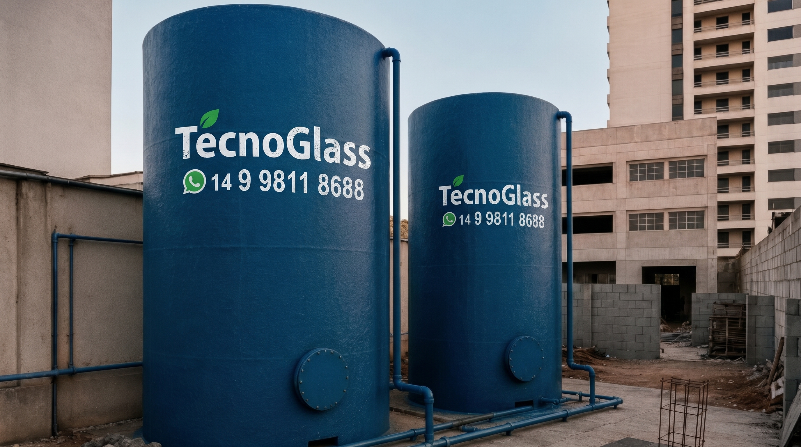
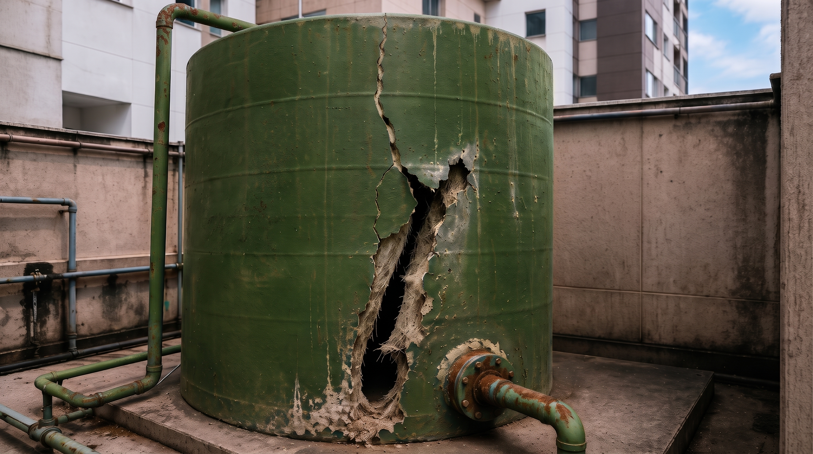
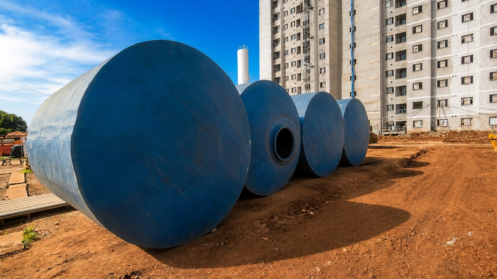

Compra com menor risco técnico
O projeto é analisado considerando volume, aplicação, ambiente de instalação, conexões e condições reais de operação.
Mais de 30 anos fabricando reservatórios em PRFV
Fabricamos reservatórios em fibra de vidro para água potável, efluentes, processos industriais e infraestrutura. Cada projeto sai sob medida, com controle de qualidade e orientação técnica, para evitar retrabalho e garantir desempenho em campo.
Atendimento consultivo para engenheiros, construtoras, condomínios, suprimentos e responsáveis técnicos que precisam comprar com segurança.
Precisa reformar, reforçar ou recuperar um equipamento existente? Conheça nossos serviços de reparo em PRFV →
Fornecedor técnico para compras seguras
A TecnoGlass desenvolve reservatórios e soluções em PRFV para condomínios, construtoras, obras, saneamento e empresas que precisam de segurança, qualidade de fabricação, durabilidade e suporte técnico para especificar corretamente antes da compra.
O projeto é analisado considerando volume, aplicação, ambiente de instalação, conexões e condições reais de operação.
Fabricação orientada por critérios técnicos, controle dimensional e requisitos aplicáveis ao projeto contratado.
Comunicação clara para quem precisa comparar fornecedor, justificar compra e reduzir incertezas antes da aprovação.
Material livre de corrosão e oxidação, indicado para ambientes úmidos, operação contínua e necessidade de baixa manutenção.
Decisão técnica com menos risco
O barato de hoje vira prejuízo amanhã: um reservatório de PRFV mal fabricado ou mal especificado causa retrabalho, atrasa a obra, exige adaptações de última hora, gera vazamentos e custos ocultos na instalação, e ainda precisa ser trocado antes do tempo. Por isso, a TecnoGlass analisa volume, dimensões, aplicação, conexões e condições reais de operação antes de fabricar.
Esses pontos ajudam a evitar incompatibilidade entre reservatório, obra, instalação e operação.
Soluções em PRFV
Linha completa para armazenamento de água potável, reservação predial, saneamento, tratamento, reforma e adequação em PRFV, com execução conforme projeto, ambiente de instalação e necessidade real da aplicação.

Solução versátil para armazenamento de água potável em prédios, condomínios, obras, áreas rurais, infraestrutura e aplicações técnicas que exigem segurança e durabilidade.
Benefício técnico: dimensionamento de altura e diâmetro sob projeto. Solicitar este modelo
Soluções para reserva de água potável, captação pluvial e armazenamento técnico com fabricação adequada ao volume, ao local e à finalidade do projeto.
Benefício técnico: estrutura adequada à aplicação e ao volume necessário. Solicitar este modeloIndicados para edifícios, condomínios, hospitais, hotéis, fazendas, indústrias e sistemas que dependem de reserva técnica confiável.
Benefício técnico: instalação estável e manutenção simplificada. Solicitar este modelo
Caixas sob medida para demandas hidráulicas, prediais, ambientais, industriais e operacionais com adequação dimensional ao projeto.
Benefício técnico: fabricação adaptada ao espaço e à finalidade do projeto. Solicitar este modelo
Reatores anaeróbios, UASB, floculadores, decantadores e filtros biológicos em PRFV para estações de tratamento de esgoto e água, com resistência química e baixa manutenção.
Benefício técnico: 100% de estanqueidade, evitando infiltração e contaminação do solo. Solicitar este modelo
Serviços técnicos para recuperar, adequar e prolongar a vida útil de tanques, flanges e tubulações em PRFV, reduzindo risco de falhas e paradas.
Tabela de tamanhos
A TecnoGlass trabalha com fabricação conforme projeto. Use a tabela como orientação inicial para informar a necessidade de volume, aplicação e espaço disponível no pedido de orçamento.
| Modelo | Capacidade | Volume | Diâmetro | Altura | Peso |
|---|---|---|---|---|---|
| Carregando modelos... | |||||
A tabela usa a base completa de modelos da calculadora. A definição final depende da aplicação, ambiente de instalação, condições de operação e análise técnica.
Por que PRFV?
O plástico reforçado com fibra de vidro é indicado para reservatórios de água potável, cisternas, saneamento, obras, condomínios e aplicações técnicas onde umidade, durabilidade e baixa manutenção são fatores importantes. Diferente do metal, o PRFV não enferruja nem sofre corrosão ou oxidação. Quando bem especificado, combina resistência mecânica, segurança e excelente desempenho de longo prazo.
Falar com um especialista em PRFVEstruturas dimensionadas para o uso previsto, com foco em estabilidade, segurança e desempenho em campo.
O PRFV não enferruja nem se degrada com a umidade, o que o torna ideal para ambientes úmidos, industriais, ambientais e sujeitos a agentes agressivos.
Menos intervenções ao longo do tempo quando o equipamento é especificado, aplicado e conservado corretamente.
Material adequado para reservação de água potável, tratamento, saneamento e aplicações nas quais vazamento, corrosão e manutenção recorrente não são opção.
Durabilidade superior a 25 anos em aplicações compatíveis, com projeto e manutenção adequados.
Combina resistência, versatilidade e baixa manutenção para entregar melhor desempenho ao longo da vida útil do reservatório.
Diferenciais TecnoGlass
Do primeiro contato ao orçamento técnico, a TecnoGlass organiza informações de aplicação, volume, diâmetro, altura, instalação e acessórios para entregar uma solução compatível com a necessidade real do projeto.
Reservatórios, reformas e serviços em PRFV fabricados de acordo com o diâmetro, altura, espaço disponível e necessidade do seu projeto.
Atuação consolidada em fibra de vidro para água potável, construção civil, condomínios, saneamento, aplicações comerciais, ambientais e industriais.
Tanques, cisternas, reservatórios estacionários, caixas especiais, reatores, reforma de tanques, flanges, reforço estrutural, reforço de flanges e laminação de tubos.
Apoio para entender aplicação, volume, diâmetro, altura, local de instalação, acessórios e requisitos de uso.
Água potável, condomínios, edifícios, construção civil, saneamento, agronegócio, indústria, alimentos, bebidas e infraestrutura.
Longa vida útil em aplicações compatíveis, com projeto correto, fabricação adequada e manutenção recomendada.
Produtos desenvolvidos para uso real em obras, reservação predial, saneamento e aplicações técnicas, com acabamento industrial, controle dimensional e construção técnica.
Soluções para armazenamento de água potável, captação, reservação e tratamento que apoiam obras, saneamento e uso racional de recursos.
Onde a TecnoGlass atua
Cada aplicação exige uma decisão diferente de volume, instalação, resistência e manutenção. Por isso, a TecnoGlass atende compradores, engenheiros, síndicos e responsáveis técnicos com soluções dimensionadas para a realidade do projeto.

Reservatórios para edifícios, condomínios, hospitais, hotéis e sistemas de abastecimento que exigem segurança, limpeza e continuidade.
Soluções sob medida para obras, edifícios residenciais, empreendimentos comerciais e compras que precisam de fornecedor confiável.
Reserva de água potável, água pluvial e apoio a sistemas prediais onde parada, vazamento ou retrabalho geram alto impacto.
Reatores anaeróbios, UASB, floculadores, decantadores e filtros biológicos em PRFV para E.T.E e E.T.A, com 100% de estanqueidade em ambientes úmidos e corrosivos.
Armazenamento, reserva operacional e soluções para propriedades, fazendas e estruturas rurais que precisam de robustez e baixa manutenção.
Aplicações que exigem material resistente, limpo, durável e adequado ao processo, com orientação técnica antes da fabricação.
Projetos realizados
Exemplos de aplicações desenvolvidas em PRFV. Use os filtros para visualizar por tipo de solução.
Como funciona
Aplicação, volume, medidas e local de instalação.
Avaliamos modelo, capacidade, conexões e condições de uso.
Solução em PRFV adequada ao seu volume e espaço.
Produzimos conforme o aprovado e entregamos para operação.
Contato comercial
Envie as informações do projeto para que a equipe comercial avalie modelo, volume, diâmetro, altura, aplicação, instalação e requisitos técnicos antes do retorno.
Prefere falar por WhatsApp? Deixe seu telefone no formulário ao lado que nossa equipe entra em contato.
Atendemos todo o território nacional.